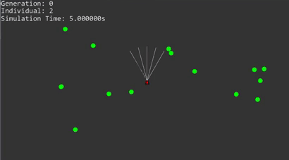
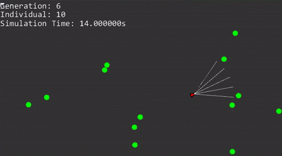

This was my major games project for 2017 in which our team had six weeks to work through alpha, beta and gold. PlunderSail is a 3rd Person Pirate-ship game with a focus on constructing your ship almost any
way you want with the goal of crossing each pirate island off your map. Our team consisted of five members, two designers, two artists and myself as the sole programmer. As the only programmer I was responsible
for planning, prototyping and implementing all game features, an important part of this was communicating with the two designers to ensure the project was on track time-wise and that features worked as expected.
The main challenge I faced during this project was being responsible for everything code related. My time management skills were put to the test as I had to plan out my time to research, prototype, implement features and bug fix.
My daily tasks included stand up meetings to stay up-to-date with the team, source control management and regular discussions with the designers on how features would work.
The features I implemented are as follows:
- A grid based building system around the ship which allowed players to place different parts within a ruleset.
- Configurable AI that allowed the designers to create several behaviours such as passive merchants who would flee or typical enemies.
- UI transitions and controller compatible menu.
- ship and camera controls.
- object pooling and other optimisation systems.
- combat systems such as cannons and dropping mines.
Aaron Smit
Hey there, this is my portfolio where you can see what projects I have worked on. I am a programmer based in Melbourne, but originally from South Africa. I moved to Australia in my pursuit of becoming a professional game programmer and am loving my new home. I'm quiet yet highly passionate and enthusiastic about my field and am always pushing myself to improve and expand my skills.
I primarily program in C++ and C# with a focus on game developement as well as other topics which interest me such as procedural generation and template meta programming (yikes). I am always working on a personal project exploring new ideas or consolidating new and old skills.
Portfolio

PlunderSail
Language: C#
This was my major game project for 2017 made in six weeks by a team of five people.

2D Physics Engine
Language: C++
A physics engine built to simulate 2D physics using industry standard techniques.
A 2D physics engine written in C++ using AIE's framework to handle input and graphics. The physics system was written from scratch and designed to minimize inheritance and maximize optimisation. The engine supports both static and dynamic objects which can be represented by any primitive shape or convex polygon. A quadtree and primitive bounding shapes are used for efficient early exits in collision detection.

NEUROEVOLUTION
Language: C++
A demo simulation showcasing my modular neural network and genetic algorithm libraries.
 
Before Training After Training
A demo simulation in which feed forward neural networks are represented by entities which can detect food infront of it with five raycasts seperated by 15 degrees with each raycast's output being the neural network's input and are awarded points for each 'food' consumed. Using my genetic algorithm library multiple generations of these entities are bread using their fitness, with each new generation having a higher sucess rate than the previous. The outcome is that hidden layer in the neural networks become tuned to solve the situation of hunting down food.
Interests
Apart from programming I enjoy bike rides on the weekends which has been a great way to explore the Melbourne area as well as get away from the computer. I prefer my time indoors during summer but in winter I'm always out exploring or hunting down new food places.
While indoors I find pleasure in reading science fiction and mythology books, as well as watching movies ranging from fantasy to musical horrors. I am by no means a chef but I do experiment with my own original dessert recipes and love cooking Italian.